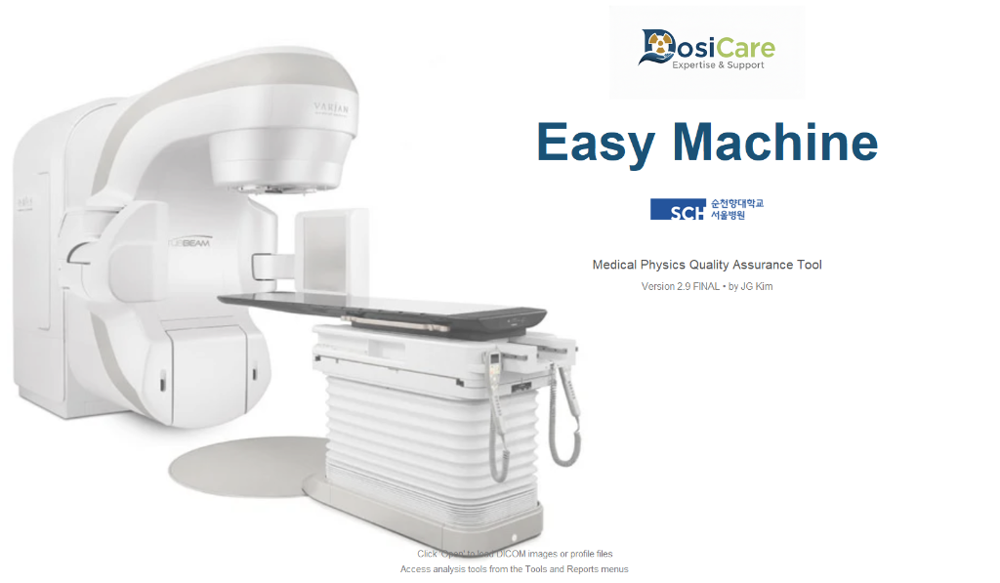

Core Software
Easy Machine
Version 2.9 FINAL
방사선 치료 품질 관리(QA) 및 데이터 분석을 전문적으로 수행하는
DosiCare의 통합 소프트웨어 솔루션입니다.

주요 기능 및 특징
'Easy Machine' (v2.9 FINAL)의 주요 기능들을 분야별로 정리해 드립니다.
01
DICOM 데이터 시각화 및 분석
- • 다중 평면 시각화: CT 이미지를 Transversal, Coronal, Sagittal 세 가지 단면으로 확인하고 제어할 수 있습니다.
- • RT 데이터 지원: RT Plan, RT Structure Set(ROI), RT Dose 데이터를 로드하여 이미지 위에 오버레이하고 분석합니다.
- • 실시간 프로파일(Real-time Profile): 마우스 커서 위치에 따른 수평(Crossline) 및 수직(Inline) 빔 프로파일을 실시간으로 계산하고 그래프로 보여줍니다.
- • BEV(Beam's Eye View): 치료 빔의 관점에서 본 영상을 렌더링하여 확인합니다.
02
RT Workspace (통합 작업 공간)
방사선 치료 계획(Plan), 선량(Dose), 구조물(Structure) 파일을 체계적으로 관리하고 브라우징할 수 있는 전용 워크스페이스를 제공합니다. 환자/검사/시리즈별로 데이터를 정리해 줍니다.
03
주요 QA 분석 도구 (Pylinac 기반)
- • Field Analysis: 조사면의 평탄도(Flatness), 대칭도(Symmetry), 반음영(Penumbra) 등을 분석합니다.
- • Starshot Analysis: 갠트리, 콜리메이터, 카우치 회전 중심(Isocenter)의 정확성을 점검합니다.
- • Picket Fence Analysis: MLC(다엽 콜리메이터)의 위치 정확도를 테스트합니다.
- • Winston-Lutz Analysis: EPID 영상을 이용해 매우 정밀하게 회전 중심(Isocenter) 위치를 검증합니다.
- • MLC Log Analysis: 가속기에서 생성된 MLC 로그 파일(Dynalog, TrajLog)을 분석하여 MLC 성능을 평가합니다.
- • Dosimetry Calibration: TRS-398 및 TG-52 프로토콜에 따른 선량 교정 기능을 지원합니다.
04
전문 분석 및 유틸리티 도구
- • 3D EPID PDD Reconstruction: EPID 영상을 기반으로 3D 선량 모델링 및 심부선량(PDD)을 재구성합니다.
- • Profile Comparison: 여러 개의 프로파일 데이터를 로드하여 상호비교 분석할 수 있습니다.
- • Gantry Angle Cal: 영상 내의 기하학적 정보를 바탕으로 갠트리 각도를 자동으로 계산합니다.
- • 데이터 처리: 데이터 노이즈 제거를 위한 Smoothing(Least Square 등) 기능과 프로파일 데이터를 ASC/CSV 등의 범용 포맷으로 변환하는 기능을 제공합니다.
05
측정 및 레포트 기능
- • 정밀 측정 도구: 디지털 자(Ruler)와 각도기(Protractor) 기능을 통해 영상 내 거리와 각도를 측정합니다.
- • 자동 PDF 레포트 생성: 모든 분석 결과(프로파일, PDD, 각종 QA 테스트)를 전문적인 양식의 PDF 리포트로 출력할 수 있습니다.
06
사용자 인터페이스(UI) 특징
- • 전문적인 레이아웃: Varian Eclipse와 유사한 전문적인 의료용 소프트웨어 레이아웃을 채택하여 숙련된 사용자가 직관적으로 사용할 수 있습니다.
- • 고해상도 지원: 다크 모드와 고해상도 그래픽을 지원하며, 전체 화면 모드(Fullscreen)로 작업 효율을 높였습니다.